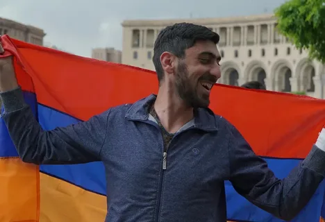
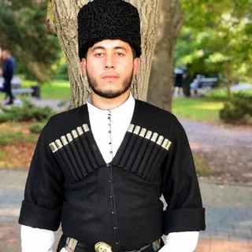
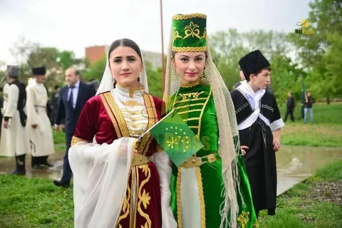

Жемчужина России
Краснодарский край — это один из ключевых и самых динамично развивающихся регионов России. Часто его неофициально называют «Кубань» — по названию главной реки, протекающей по его территории.
Край расположен на юго-западе России, в западной части Большого Кавказа, и омывается с запада Азовским морем, с юго-запада — Чёрным морем. Это делает регион уникальным — он имеет выход сразу к двум морям.
Климат варьируется от умеренно-континентального на севере до субтропического на Черноморском побережье, что делает край главным курортным регионом страны.
Народы Краснодарского края

Русские
Численность: более 5 млн человек
Основной этнос края - около 88% населения
Русские составляют абсолютное большинство населения Краснодарского края. Их расселение равномерно по всей территории, с максимальной концентрацией в крупных городах и станицах.
Основные места проживания
Краснодар, Сочи, Новороссийск, Армавир, Ейск, а также многочисленные станицы и сельские поселения
Традиционные занятия
Земледелие
Выращивание пшеницы, ячменя, кукурузы, риса - Кубань называют "житницей России"
Садоводство и виноградарство
Выращивание фруктов, ягод и винограда для производства вина
Животноводство
Разведение КРС, свиноводство и птицеводство
Традиционные промыслы
Гончарное дело
Изготовление традиционной посуды в станицах Гончарка и Старокорсунская
Плетение из лозы
Создание корзин, мебели и других изделий из ивовой лозы
Плетение из чакана
Изготовление кубанских тырс (циновок) из болотного растения рогоз
Кузнечное дело
Традиционная обработка металла в казачьих станицах

Армяне
Численность: около 210 000 человек
Вторая по численности этническая группа в крае
Армяне являются одной из самых крупных и исторически укорененных диаспор в Краснодарском крае, вносящей значительный вклад в экономику и культуру региона.
Основные места проживания
Сочи (особенно Адлерский и Лазаревский районы), Краснодар, Армавир, Новороссийск, Туапсе, Анапа
Основные сферы деятельности
Торговля и бизнес
Розничная и оптовая торговля, общественное питание
Строительство
Девелоперские компании и строительные бригады
Сельское хозяйство
Выращивание овощей, фруктов, виноградарство
Традиционные промыслы
Виноделие
Особенно развито в Анапском районе (сёла Сукко, Варваровка, Гай-Кодзор)
Гончарное дело
Традиционная керамика с армянскими орнаментами
Ювелирное искусство
Обработка серебра и создание украшений
Ковроткачество
Сохранение традиций создания армянских ковров

Адыгейцы
Численность в крае: несколько тысяч человек
Коренной народ Северо-Западного Кавказа
Адыгейцы (черкесы) - коренное население региона с богатой историей и культурой. Основная часть проживает в Республике Адыгея, но исторические общины сохранились и в Краснодарском крае.
Основные места проживания
Лазаревский район Сочи (сёла Большой Кичмай, Малый Кичмай), Мостовской район, аулы в Туапсинском районе
Традиционные занятия
Земледелие
Выращивание проса, ячменя, пшеницы, овощей
Садоводство
Выращивание фруктов, орехов, винограда
Животноводство
Коневодство, разведение КРС, овец и коз
Традиционные промыслы
Оружейное дело
Изготовление знаменитых черкесских шашек и кинжалов
Золотошвейное искусство
Уникальная вышивка золотыми и серебряными нитями
Ювелирное дело
Создание украшений с чернью и позолотой
Бортничество
Традиционное пчеловодство - один из древнейших промыслов

Шапсуги
Численность: 10 000 - 15 000 человек
Коренной малочисленный народ России, субэтнос адыгов
Шапсуги - одна из субэтнических групп адыгского народа, компактно проживающая в исторической области Малая Шапсугия на Черноморском побережье Кавказа.
Основные места проживания
Лазаревский район Сочи: сёла Большой Кичмай, Малый Кичмай, Калеж, Лыготх, Наджиго и другие
Современные занятия
Туризм
Развитие этнотуризма и сельского туризма
Сельское хозяйство
Традиционное земледелие и животноводство
Ремесла
Сохранение и развитие традиционных промыслов
Традиционные промыслы
Металлообработка
Изготовление и украшение холодного оружия
Ювелирное искусство
Создание украшений из серебра с чернью
Ткачество
Изготовление традиционной одежды и предметов быта
Изготовление бурок
Традиционное войлочное ремесло
Экономика и значение региона
Агропромышленный комплекс
Краснодарский край - "житница России", лидер по производству зерна, сахарной свёклы, подсолнечника, винограда и чая
Курортно-туристическая отрасль
Крупнейший курортный регион России с мировыми курортами: Сочи, Анапа, Геленджик, Туапсе
Транспорт и логистика
Стратегическое значение благодаря портам Чёрного и Азовского морей, включая крупнейший порт России - Новороссийск
Промышленность
Развиты пищевая переработка, топливно-энергетический комплекс, машиностроение и производство строительных материалов
Дополнительная информация о Краснодарском крае
Столица: Краснодар
Площадь: ~75,5 тыс. км²
Население: Около 5,7 млн человек
Федеральный округ: Южный
Дата образования: 13 сентября 1937 года
Плотность населения: ~102,2 чел./км²